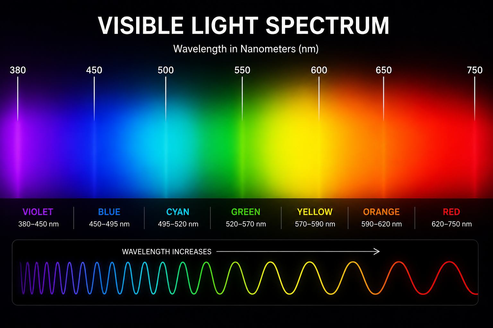

Learn Safety
Understand basic laser classifications and important safety practices.

Answer a few simple questions to learn which beginner laser option best matches your interests and experience.
Understand basic laser classifications and important safety practices.
Receive a personalized beginner-friendly starting suggestion.
Explore wavelengths, power levels, visibility, and important terminology.
Question 1 of 5
Choose the option that best matches your main use.
Green light is highly visible to the human eye, so it appears bright even at relatively low power. It can be an approachable option for learning about visible wavelengths while maintaining a strong focus on safety.
Green lasers are known for their strong visibility and are often used for educational demonstrations, astronomy pointing, alignment, and visual effects.
532 nanometers, commonly perceived as green light.
A low-output 1–5 mW product may be more appropriate for introductory education than a high-powered device.
Class 3R products require caution and responsible handling.
Green light appears especially visible to the human eye, even at relatively low output.
Protective eyewear must be certified for the specific wavelength and optical density required by the product.
You can retake the quiz and explore different options based on your interests and experience.
Laser Starter Guide is an educational web application created to introduce beginners to visible wavelengths, power ranges, classifications, and responsible laser use.
Recommendations are general educational examples and are not a replacement for manufacturer documentation, certified laser safety training, or applicable laws and regulations.